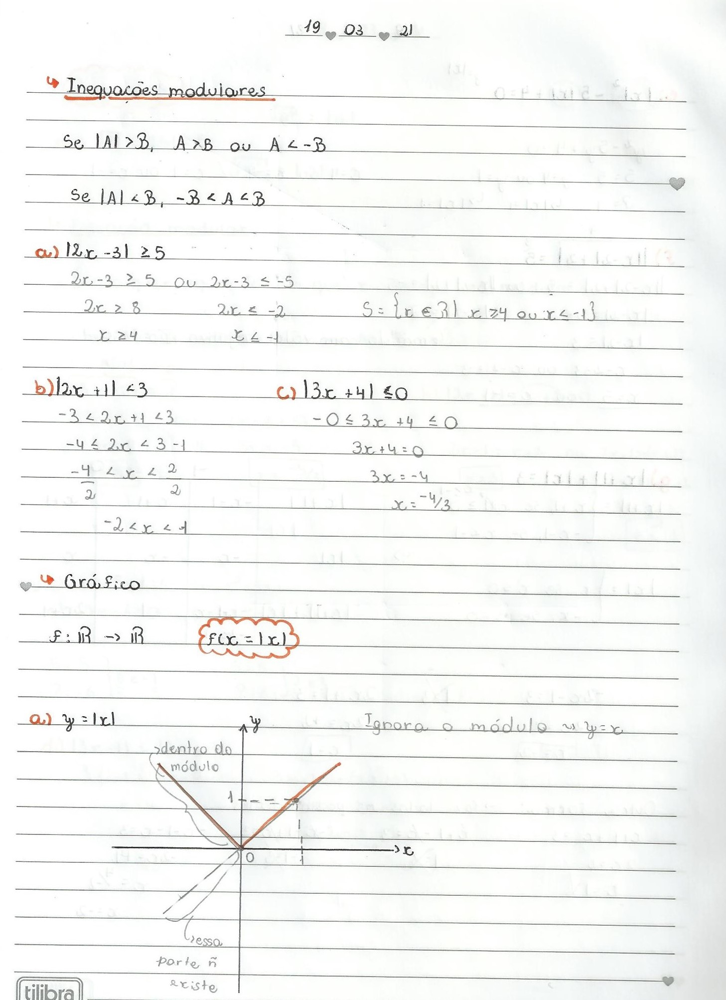

De forma simples, a função modular é aquela que apresenta módulo em sua formação. A forma dela é: f(𝓍) = |𝓍| ou y = |𝓍| Esse tipo de função tem duas características:
Vamos pensar no gráfico da função f(𝓍) = |-𝓍| :
Primeiramente vamos imaginar o gráfico da função f(𝓍) = -𝓍 :
Agora vamos pensar a função do gráfico no módulo:
A pergunta é: Porque no primeiro gráfico a linha está crescendo e no segundo gráfico a linha está em um formato de V?
Bom, ali nos conceitos básicos foi colocado que o módulo da função nunca vai ser negativo. Portanto, quando passamos a função f(𝓍) = 𝓍 para f(𝓍) = |𝓍|, a parte negativa de y foi refletida para a parte positiva de y, porque o módulo do resultado não pode ser negativo. Se a linha estivesse na parte negativa, a função não seria modular.
Vamos colocar mais alguns exemplos de gráficos:
Aqui o caso é o mesmo, exceto por a função ser quadrática. Note que a linha azul é a função sem o módulo ( f(𝓍) = 𝓍2 - 6𝓍 + 5 ), e a linha verde é a função com o módulo ( f(𝓍) = |𝓍2 - 6𝓍 + 5| ). Portanto, a parte verde é a parte refletida do gráfico.
Outra coisa que temos que lembrar é que os locais que são cortados no eixo 𝓍 são as raízes da equação.
Aqui tem alguns resumos que eu fiz do conteúdo:
Esse conteúdo foi mais complicado por conta de alguns cálculos e a questão do gráfico, que era refletido e que "subia" em alguns casos. Eu assisti as vídeo aulas do canal Equaciona com Paulo Pereira para fazer os resumos e para me ajudar a entender melhor a questão dos gráficos. Também pedi ajuda para alguns colegas para eles me explicarem o conteúdo, e daí consegui fazer o trabalho 1. PS: Nos meus resumos todas as anotações em lápis são as contas que eu vou resolvendo ou alguma coisa que eu anoto que me ajuda a entender melhor os conceitos.
Créditos da criação do fundo do site: Fundo foto criado por lifeforstock - br.freepik.com
Me siga no Instagram: @ro_giotti
Entre em contato por email: robertare22@gmail.com
Link para o canal Equaciona com Paulo Pereira: